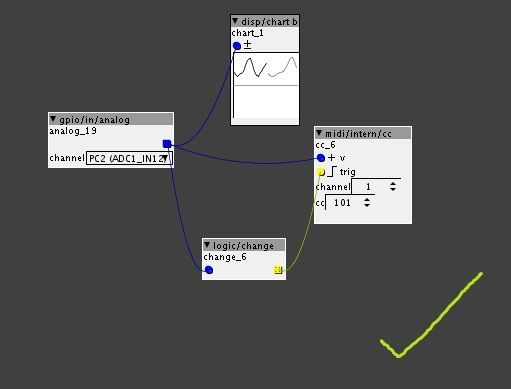

I have the - on the + side and the + on the - side so my readings from the analog gpio are all inverted.
Anyone know how to flip this in a patch?

I have the - on the + side and the + on the - side so my readings from the analog gpio are all inverted.
Anyone know how to flip this in a patch?
Dang! That sorta works! But not for what I'm doing for some reason. 
I'm using the pot to change parameters in patches using midi cc.
For example I'll use this set up to change the value of midi cc 101 and I'll assign it to the attack of a note.
Before implementing the math/inv object it works (although its currently backwards..)
Here's what it looks like:

After I add the math/inv object though, it doesn't work...I'll turn the pot, I can see the display graphic the changes, but there's no effect on the attack.
Not sure what I'm doing wrong here...